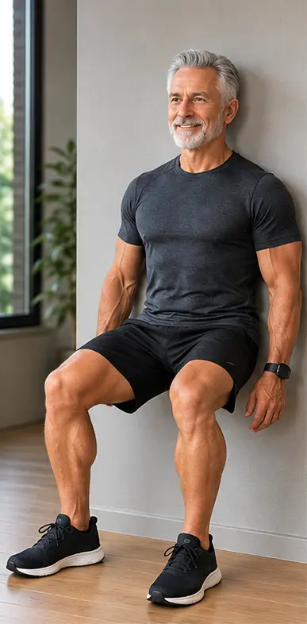
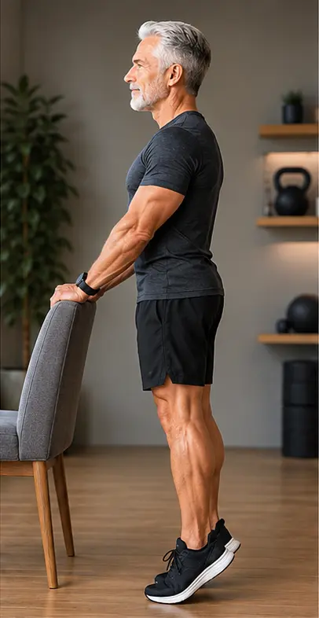
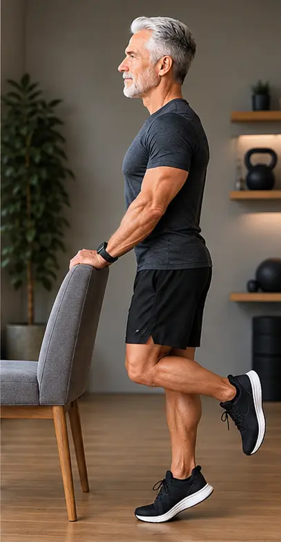
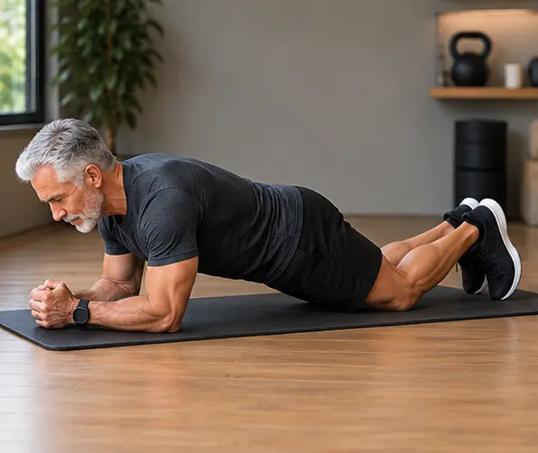
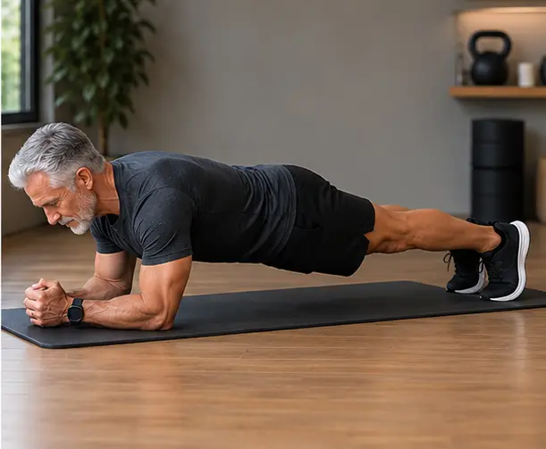

Testosterona baixa depois dos 50: entendendo as mudanças no corpo do homem
Depois dos 50, é comum o corpo masculino passar por uma queda natural e gradual nos níveis de testosterona. Isso não é sinal de fraqueza, nem "coisa da cabeça" — é biologia, e faz parte do processo de envelhecer, assim como acontece com as mulheres na menopausa. Falar sobre isso abertamente é o primeiro passo pra lidar bem com essa fase, sem culpa e sem silêncio.
Aqui você vai entender, em linguagem simples, por que essa queda acontece, quais sinais o corpo costuma dar e o que realmente ajuda no dia a dia.
O que é e por que acontece
A partir dos 40-50 anos, a produção de testosterona começa a cair de forma lenta e constante — algo entre 1% e 2% ao ano. Para muitos homens, essa queda passa despercebida por um bom tempo. Para outros, os sintomas aparecem de forma mais evidente e afetam diretamente a qualidade de vida.
A testosterona não cuida só do desempenho sexual. Ela também participa da regulação da energia, do humor, do sono e da manutenção da massa muscular. Quando a produção desse hormônio cai, todos esses sistemas sentem a mudança — e é por isso que os sinais aparecem em áreas tão diferentes do corpo e da mente ao mesmo tempo.
Os sinais que o corpo dá
Cada homem vive essa fase de um jeito diferente — alguns quase não notam, outros sentem bastante. Os sinais mais comuns são:
Nenhum desses sinais precisa ser encarado sozinho, nem em silêncio. Todos têm explicação — e, na maioria dos casos, também têm alívio.
Além dos sintomas físicos, essas mudanças também mexem com a forma como o homem se enxerga — a autoconfiança, a disposição para a vida social, o ânimo no dia a dia. Esse é um assunto tão importante que vai ganhar um espaço próprio aqui no site em breve.
O que ajuda no dia a dia
Não existe uma fórmula única, mas algumas atitudes simples costumam fazer diferença real:
- Procurar um médico (urologista ou endocrinologista) para avaliar os níveis hormonais com um exame de sangue
- Manter atividade física regular, principalmente exercícios de força — veja três sugestões logo abaixo
- Cuidar do sono e da alimentação, como já falamos em alimentação simples para uma vida mais ativa
- Não normalizar o cansaço extremo ou a queda de libido como "coisa da idade" sem investigar
- Conversar abertamente com pessoas próximas sobre o que está sentindo — isolamento só piora a fase
Exercícios de força para começar hoje
Fortalecer os grandes grupos musculares — principalmente as pernas — é o que mais estimula a resposta hormonal do corpo. Os três exercícios abaixo não exigem equipamento e podem ser feitos em casa, com segurança, mesmo por quem nunca treinou antes.
-
Agachamento na parede. Costas apoiadas na parede, pés afastados na largura
do quadril e um pouco à frente do corpo. Deslize devagar até os joelhos formarem um ângulo
confortável (sem precisar chegar a 90° de início) e segure a posição.

Comece com 3 séries de 30 segundos de sustentação, evoluindo para 45 segundos e depois 1 minuto.


Comece com 3 séries de 10 repetições com os dois pés juntos, evoluindo para 15. Depois, avance para a versão alternada, repetindo a mesma progressão.


Progressão em duas etapas: primeiro, com apoio nos joelhos — 3 séries de 30 segundos, evoluindo para 45 segundos e depois 1 minuto. Depois disso, evolua para a prancha completa e repita a mesma progressão: 30 segundos, 45 segundos e 1 minuto.
Quando buscar ajuda médica
Isso aqui precisa ser dito sem rodeios: cansaço extremo, mudanças de humor intensas, ou qualquer sinal que atrapalhe o seu dia a dia não são algo para aguentar calado. Existe acompanhamento médico específico para essa fase, e só um profissional pode avaliar o que é seguro e adequado para o seu caso. Buscar essa ajuda não é fraqueza, é cuidado.
Um dos sinais mais sensíveis dessa fase — a queda no desempenho sexual — pode evoluir para o que chamamos de disfunção erétil. Esse é um tema tão comum e tão cercado de silêncio que merece um espaço só dele aqui no site, em breve.
— Sr. Oliveira